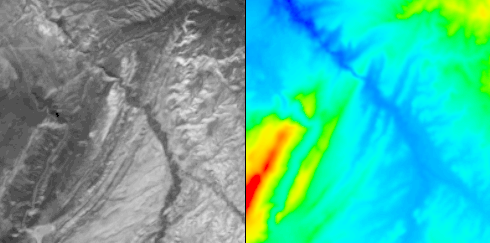

This visual program shows some ways to visualize topographic data. It imports a data set which describes the elevation of a region of Colorado and a satellite photograph of the same region.
Grey Scale Image / Elevation Data

The elevation data are assigned colors by height. (Red and blue correspond to peaks and valleys.) The visualization task is to create a realistic view of the surface by combining the photograph with the elevation data.
...about the visualizationThe image on left shows the satellite image combined with the elevation data. The image on the right is rubbersheeted elevation data. The 2 images share a common viewpoint. If you rotate the image on the left, you'll see the one on the right from the same camera position....about the visual programReorient is used to ensure that the image color data is assigned to the elevation data in the correct order, as the original data sets, while on the same grid, do not have the data in the same order. The "how" parameter of Reorient was set so that the two small images have the same orientation; the grey image is the photograph, while the colored image is the elevation data.If the image and elevation data had not been on the same grid, then instead of Replace we could have used Map to map the elevation data onto the image field. You may specify a reduction factor. This value is used as input the Reduce tool which reduces the resolution of the data for better performance. When you're satisfied with the camera position, you might select a reduction factor of 0. |